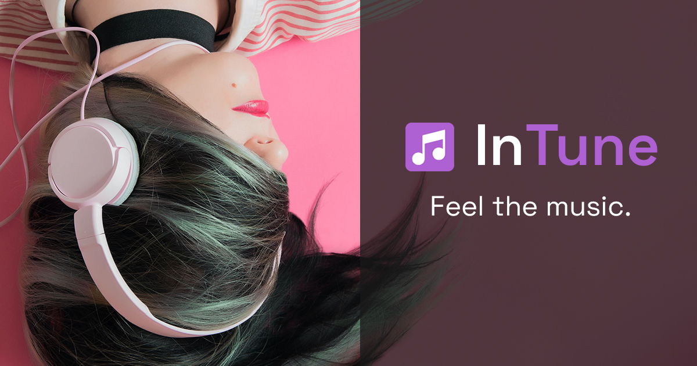
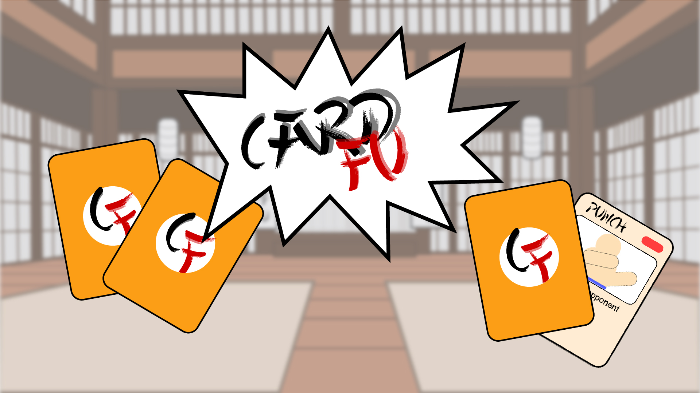
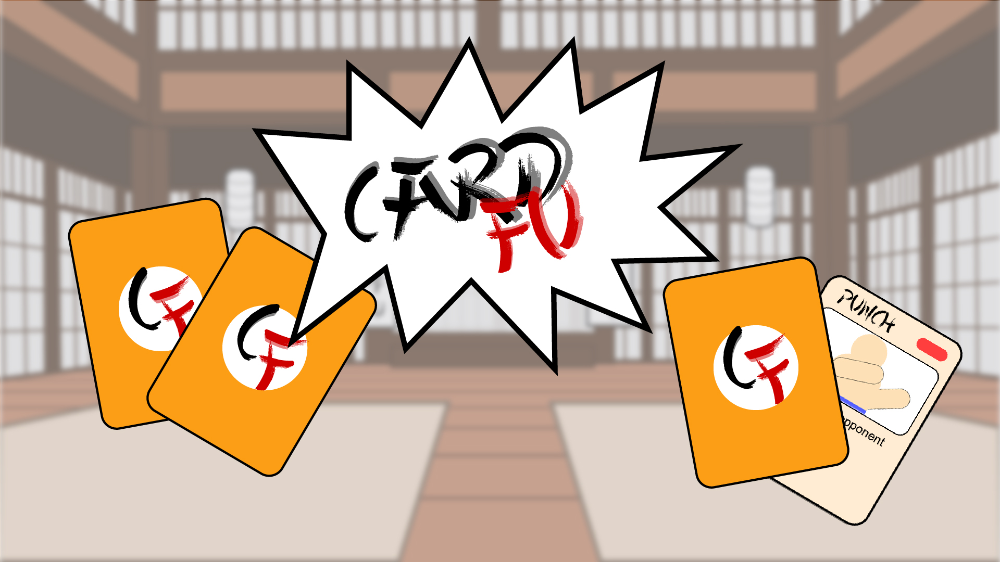

Valdet's Portfolio Work
Below you will find a showcase of my work. I'm excited to have the oppurtunity of sharing it with
you. I
hope you enjoy viewing my projects as much as I did building them. Thank you for taking the time to
experience my ideas.
Sincerely,
- Valdet

InTune
InTune is a music selction tool. Using different APIs this web app allows you to find music
based on your mood, activity, the time of day, or weather. It's a fun way to discover new
music, and an easiar way to find a soundtrack to fit your surroundings.
Technologies used:
We Save On Power
We Save On Power is a sales funnel website I made. The site offers a small quiz to filter
people for potential customers. If the conversion is successful and the customer signs up,
they are then contacted by a sales person.
Technologies used:
 

Card Fu
Card Fu is a capstone project I made. Card Fu is a turn based strategy fighting game, that incorporates machine learning and artificial intelligence. This capstone project was an oppurtunity for me to try out new technologies, and step outside my comfort zone.
Technologies used: